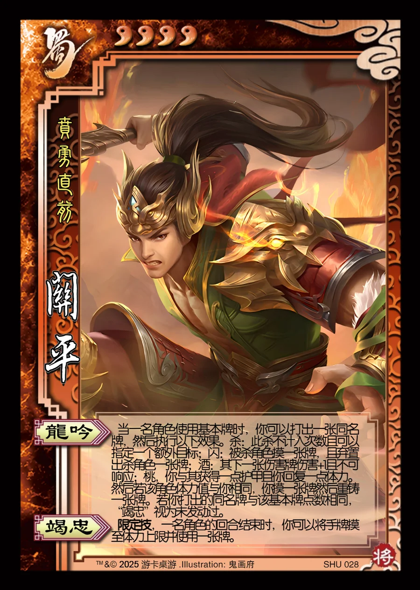

点击卡面查看大图
蜀
关平
♥4贲勇直前
龙吟
当一名角色使用基本牌时，你可以打出一张同名牌，然后执行以下效果。杀：此杀不计入次数且可以指定一个额外目标；闪：被杀角色摸一张牌，且弃置出杀角色一张牌；酒：其下一张伤害牌伤害+1且不可响应；桃，你与其获得一点护甲且你回复一点体力。然后若该角色体力值与你相同，你摸一张牌然后重铸一张牌。若你打出的同名牌与该基本牌点数相同，“竭忠”视为未发动过。
竭忠限定技
限定技，一名角色的回合结束时，你可以将手牌摸至体力上限并使用一张牌。